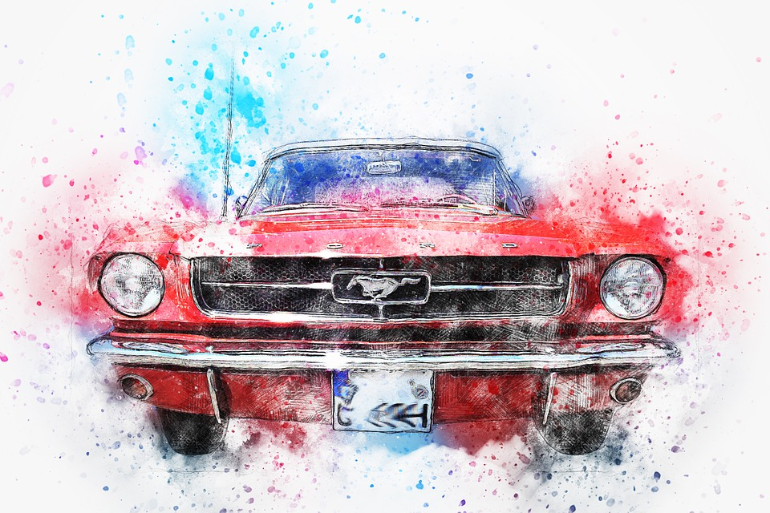

Существует огромное разнообразие стилей и направлений в изобразительном искусстве.
Часто они не имеют четко выраженных границ и плавно переходят из одного в другой, находясь в непрерывном развитии, смешении и противодействии.
В рамках одного исторического художественного стиля всегда зарождается новый, а тот, в свою очередь, переходит в следующий и т.д.
Многие стили сосуществуют одновременно и поэтому «чистых стилей» вообще не бывает.
СодержаниеАбстракционизм

(произошло от лат. abstractio – удаление, отвлечение) – направление искусства, отказавшееся от приближенного к действительности изображения форм в живописи и скульптуре. Одна из целей абстракционизма – достижение гармонии, создание определённых цветовых сочетаний и геометрических форм, чтобы вызвать у созерцателя разнообразные ассоциации. Главными представителями абстракционизма были: Василий Кандинский (1866-1944), Пабло Пикассо (1881-1973).